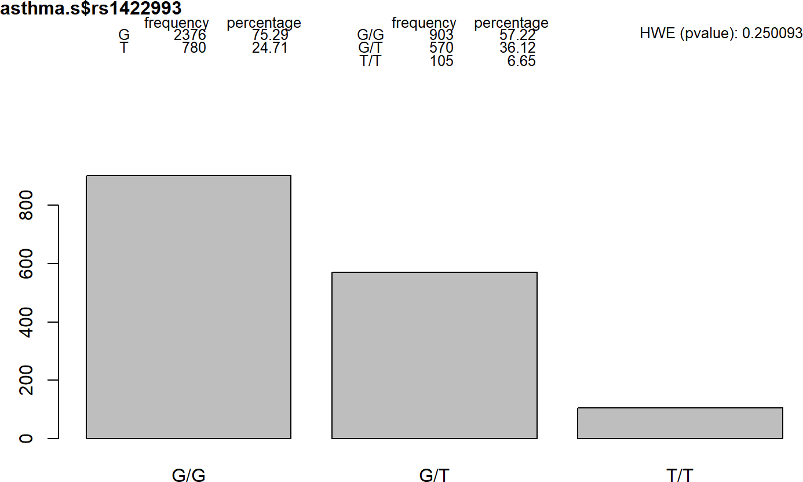
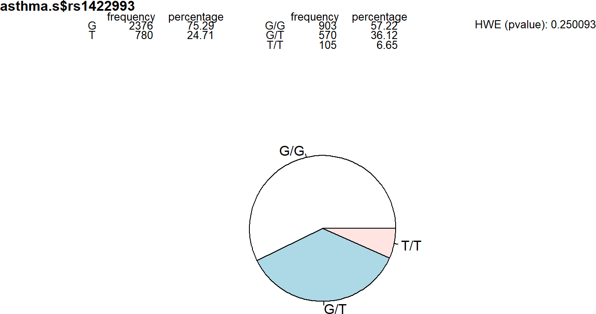
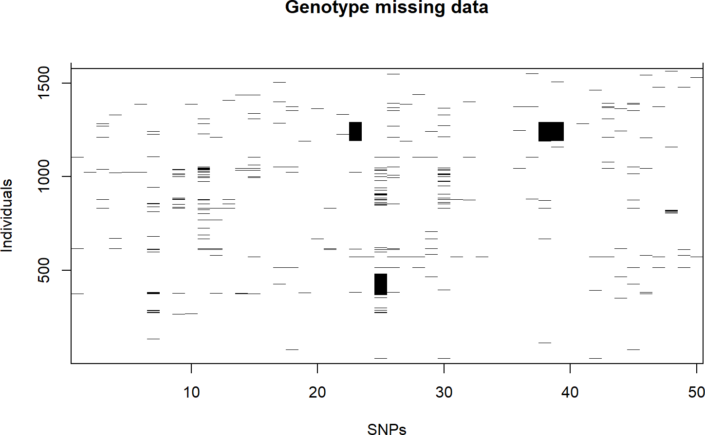

SNPassoc
Introduction
The `SNPassoc` package contains facilities for data manipulation, tools for exploratory data analysis, convenient graphical facilities, and tools for assessing genetic association for both quantitative and categorial (case-control) traits in whole genome approaches. Genome-based studies are normally analyzed using a multistage approach. In the first step researchers are interested in assessing association between the outcome and thousands of SNPs. In a second and possibly third step, medium/large scale studies are performed in which only a few hundred of SNPs, those with a putative association found in the first step, are genotyped. `SNPassoc` is specially designed for analyzing this kind of designs. In addition, a convenience-based approach (select variants on the basis of logistical considerations such as the ease and cost of genotyping) can also be analyzed using `SNPassoc`. Different genetic models are also implemented in the package. Analysis of multiple SNPs can be analyzed using either haplotype or gene-gene interaction approaches. This document is an updated version of the initial vignette that was published with the SNPassoc paper @gonzalez2007snpassoc. It contains a more realistic example belonging to a real dataset. The original vignette is still available here.
Data loading
SNP data are typically available in text format or Excel spreadsheets which are easily uploaded in `R` as a data frame. Here, as an illustrative example,
we are analyzing a dataset containing epidemiological information and 51 SNPs from a case-control study on asthma. The data is available within `SNPassoc`
and can be loaded by. Then, the data is loaded into the R session by
data(asthma, package = "SNPassoc")
str(asthma, list.len=9)
asthma[1:5, 1:8]
We observe that we have case-control status (0: control, 1: asthma) and another 4 variables encoding the country of origin, gender, age, body mass index
(bmi) and smoking status (0: no smoker, 1: ex-smoker, 2: current smoker). There are 51 SNPs whose genotypes are given by the alleles names.
Descriptive analysis
To start the analysis, we must indicate which columns of the dataset `asthma` contain the SNP data, using the `setupSNP` function. In our example,
SNPs start from column 7 onwards, which we specify in argument *colSNPs*
library(SNPassoc)
asthma.s <- setupSNP(data=asthma, colSNPs=7:ncol(asthma), sep="")
This is an alternative way of determining the columns containing the SNPs
idx <- grep("^rs", colnames(asthma))
asthma.s <- setupSNP(data=asthma, colSNPs=idx, sep="")
The argument *sep* indicates the character separating the alleles. The default value is ''/´´. In our case, there is no separating character, so that,
we set *sep=""*. The argument *name.genotypes* can be used when genotypes are available in other formats, such as 0, 1, 2 or ''norm´´, ''het´´, ''mut´´.
The purpose of the `setupSNP` function is to assign the class *snp* to the SNPs variables, to which `SNPassoc` methods will be applied. The function labels
the most common genotype across subjects as the reference one. When numerous SNPs are available, the function can be parallelized through the argument *mc.cores*
that indicates the number of processors to be used. We can verify that the SNP variables are given the new class *snp*
head(asthma.s$rs1422993)
class(asthma.s$rs1422993)
and summarize their content with `summary`
summary(asthma.s$rs1422993)
which shows the genotype and allele frequencies for a given SNP, testing for Hardy-Weinberg equilibrium (HWE). We can also visualize the results in a plot by
plot(asthma.s$rs1422993)

The argument *type* helps to get a pie chart
plot(asthma.s$rs1422993, type=pie)

The *summary* function can also be applied to the whole dataset
summary(asthma.s, print=FALSE)
showing the SNP labels with minor/major allele format, the major allele frequency the HWE test and the percentage of missing genotypes.
Missing values can be further explored plotting with
plotMissing(asthma.s, print.labels.SNPs = FALSE)

This plot can be used to inspect if missing values appear randomly across individuals and SNPs. In our case, we can see that the missing
pattern may be considered random, except for three clusters in consecutive SNPs (large black squares). These individuals should be further checked for
possible problems with genotyping.